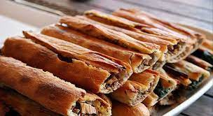
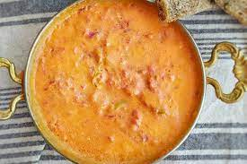
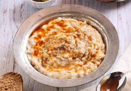

AnaSayfa
Yemekler
Gezinti

- 1 porsiyon ( yaklaşık 230 gr.) Bafra pidesi 70-75 cm uzunluğunda ve 3-4 cm eninde olup, üstü kapalıdır.
Pişen ve tereyağı ile yağlanan Bafra Pidesi 6 eşit parçaya kesilmesiyle (yaklaşık 12-13 cm uzunluğunda)
servis edilir, yerken hamurunun özelliğinden dolayı baklava gibi ağızda dağılır.Diğer pidelerde, eritilmiş
margarin hamurun üstüne fırça ile sürülmektedir. Bafra pidesinde ise yöremize has olan tereyağı parça halinde
hamurun içine konularak eritilmektedir.

-
Çakallı Melemeni yemeğinin diğer bölgelerden ayıran özellikler; tereyağı, kaşar peyniri ve bir porsiyonluk
yemekte kullanılan iki yumurtanın sadece sarısını kullanmaktır. İçerisinde müşterinin isteğine göre malzemenin
bolca ve tamamen doğal ürünlerin sunulmasıdır. Ayrıca doğal ürünlerin seçimi, pişirme tekniği ve ustalık da yemeğe
farklılık katar. Yemek servisi ise pişirilen tavada yapılır. Porsiyonlar ise 1 kişiden 4 kişiye kadar ayrı tavalarda sunulur.

-
Keşkek: Çarşamba'da genellikle düğünlerde yapılan bir yiyecektir. Buğday, tavuk ya da kuzu eti ve tereyağı ile yapılır.
Düğünlerde, ev davetlerinde yapılan bir yiyecektir. Buğday ve et birbirinin içine iyice yedirilir. Yapılışı Tavuk Göğsü tatlısını
andırsa da ana yemek olarak verilir. Hazmı çok ağırdır. Şeker ve kolesterol hastalarının özellikle sakınması gerekir.